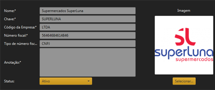
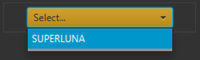

Fornecedores
É possivel cadastrar seus fornecedores por itens no qual ele fornece.
Primeiramente abra a tela "Lugares" e cadastre o lugar onde se localiza o fornecedor.
Em seguida, abra a tela "Fornecedores" e cadastre os mesmos.

Após isso, abra a tela "Catálogo" e selecione o fornecedor cadastrado.

E então poderá inserir o Item ja cadastrado na tela "Itens", com o seu fornecedor e o preço individual.
Compra
É possivel inserir entrada de itens por meio de Compra, utilizando os fornecedores e os itens.